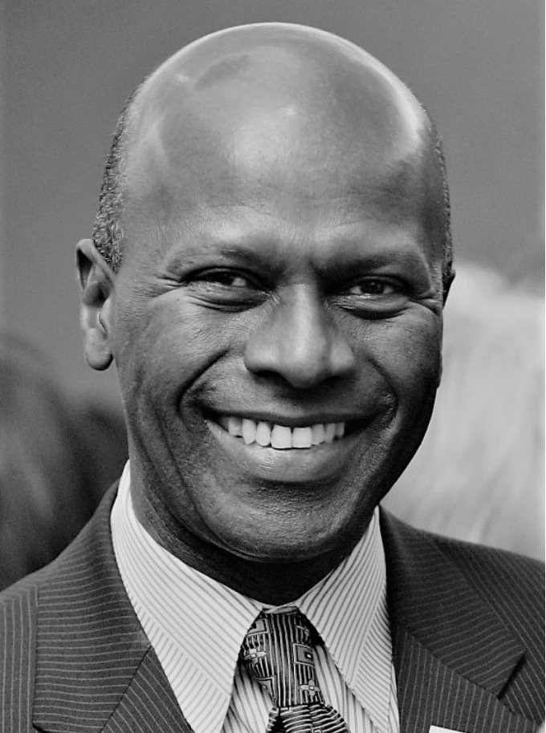

Alexis Dixon
Visionary & Founder
Alexis Dixon is a visionary whose life’s work spans over two decades in the art of humanistic conflict resolution. Born in Guyana and rooted in the enduring values of belonging, humanity, and brilliance, he has dedicated his career to transforming conflict into opportunity through deep listening, empathy, and connection, a journey profoundly influenced by the principles of Rogerian Psychotherapy. Alexis’s path has taken him from intimate, heartfelt conversations to dynamic global dialogues, each interaction reinforcing his commitment to restoring the intricate fabric of human connection. His work transcends the conventional bounds of conflict resolution, emerging as a powerful catalyst for unity and mutual respect.
Steeped in personal history and resilience, Alexis carries forward the legacy of his father, Sir Eric Matthew Gairy, Grenada’s first Prime Minister whose courageous stand against colonial oppression and leadership in ushering his nation to independence continue to inspire him today. This heritage of strength and liberation has imbued Alexis with an unwavering resolve to bridge divides and nurture spaces where every individual feels a deep sense of belonging. In a bold extension of his vision, Alexis conceived the groundbreaking Brilliance Exposed exhibition, a visionary project that celebrates the extraordinary contributions of men and women of color in science, technology, engineering, art, and math. Through striking black-and-white portraiture, Brilliance Exposed illuminates the ingenuity, perseverance, and brilliance of those whose stories have too long been overlooked. More than an exhibition, it stands as a declaration of empowerment, a reclaiming of space, and a tribute to the boundless potential of human creativity and intellect.
Through his body of work and visionary initiatives such as Brilliance Exposed, Alexis Dixon extends a disciplined invitation to engage the texture of our shared humanity and to shape a future in which the collective human spirit is realized with intellectual rigor, moral courage, and enduring brilliance. Grounded in a personal meeting with Archbishop Desmond Tutu, who observed that “we are spiritual giants, yet we behave as spiritual dwarfs,” his practice calls communities forward, summoning them to inhabit the full measure of their ethical responsibility and creative power.